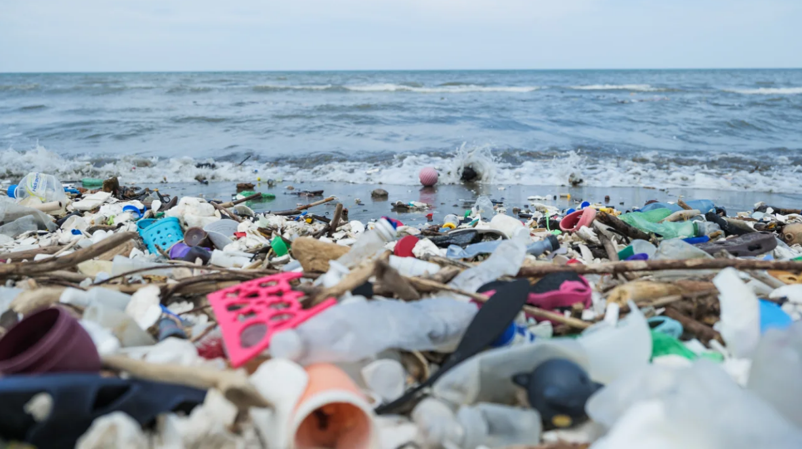
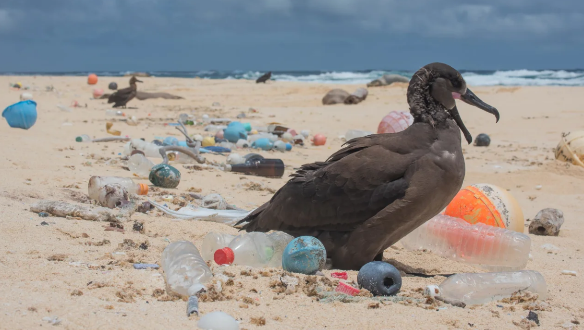

.png)
More than 170 trillion plastic particles found in the ocean as pollution reaches ‘unprecedented’ levels
Written by Laura Paddison, CNN
12:31 PM EST, Wed March 8, 2023
Share this article:
The world’s oceans are polluted by a “plastic smog” made up of an estimated 171 trillion plastic particles that if gathered would weigh around 2.3 million tons, according to a new study.
A team of international scientists analyzed global data collected between 1979 and 2019 from nearly 12,000 sampling points in the Atlantic, Pacific and Indian oceans and the Mediterranean Sea.
They found a “rapid and unprecedented” increase in ocean plastic pollution since 2005, according to the study published Wednesday in the journal PLOS ONE.
“It is much higher than previous estimates,” Lisa Erdle, director of research and innovation at the 5 Gyres Institute and an author on the report, told CNN.
Without urgent policy action, the rate at which plastics enter the oceans could increase by around 2.6 times between now and 2040, the study found. Plastic production has soared in the last few decades, especially single-use plastics, and waste management systems have not kept pace. Only around 9% of global plastics are recycled each year.
Huge amounts of that plastic waste end up in the oceans. The majority comes from land, swept into rivers – by rain, wind, overflowing storm drains and littering – and transported out to sea. A smaller but still significant amount, such as fishing gear, is lost or simply dumped into the ocean.
Once plastic gets into the ocean, it doesn’t decompose but instead tends to break down into tiny pieces. These particles “are really not easily cleaned up, we’re stuck with them,” Erdle said.
Marine life can get entangled in plastic or mistake it for food. Plastic can also leach toxic chemicals into the water.
And it isn’t just an environmental disaster; plastic is also a huge climate problem. Fossil fuels are the raw ingredient for most plastics, and they produce planet-heating pollution throughout their lifecycle – from production to disposal
Plastic pollution on a beach in Honduras.
Figuring out exactly how much plastic is in the ocean is a hard exercise. “The ocean is a complex place. There are lots of ocean currents, there are changes over time due to weather and due to conditions on the ground,” Erdle said.
The researchers spent years poring over peer-reviewed papers as well as unpublished findings from other scientists to try to collate the most extensive record they could – both in terms of timeframe and geography.
Most of the study’s samples were collected in the North Pacific and North Atlantic, where the majority of data exists. The study authors say more data is still needed for areas including the Mediterranean Sea, Indian Ocean and the South Atlantic and South Pacific.
“This research opened my eyes to how challenging plastic in the ocean is to measure and characterize and underscores the need for real solutions to the problem,” Win Cowger, a research scientist at Moore Institute for Plastic Pollution Research in California and a study author, said in a statement.
Since the 1970s, there has been a slew of agreements aimed at stemming the tide of plastic pollution reaching the ocean, yet they are mostly voluntary, fragmented and rarely include measurable targets, the study noted.
The study authors call for urgent international policy intervention. “We clearly need some solutions that have teeth,” Erdle said.
A bird is surrounded by ocean plastic on the Northwestern Hawaiian Islands.
The United Nations has agreed to create a legally binding global plastics treaty by 2024, which would address the whole life of plastics from production to disposal. But big divisions remain over whether this should include cuts in plastic manufacturing, which is predicted to quadruple by 2050.
Judith Enck, a former EPA regional administrator and now-president of Beyond Plastics, a non-profit focused on research and consumer education, said that policies to reduce the amount of plastic produced in the first place are the only real solution, especially as companies are continuing to find new ways to pump more plastics into the market.
“The plastics and petrochemical industries are making it impossible to curb the amount of plastic contaminating our oceans,” Enck told CNN by email.
“New research is always helpful, but we don’t need to wait for new research to take action — the problem is already painfully clear, in the plastic accumulating in our oceans, air, soil, food, and bodies.” Enck said.